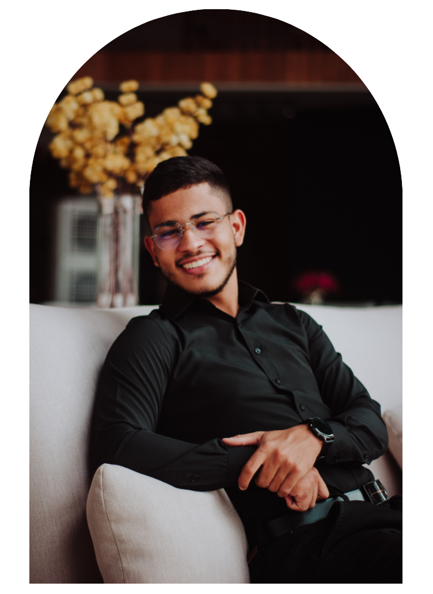

Quem
sou eu?

Fotógrafo e empreendedor
desde os 16 anos. Iniciei
na fotografia não apenas como um trabalho, mas sim, como
uma paixão desde quando criança, de poder eternizar
em forma de fotos, histórias e eventos marcantes na vida de muitas pessoas.
Fotógrafo e empreendedor
desde os 16 anos. Iniciei
na fotografia não apenas como um trabalho, mas sim, como
uma paixão desde quando criança, de poder eternizar
em forma de fotos, histórias e eventos marcantes na vida de muitas pessoas.